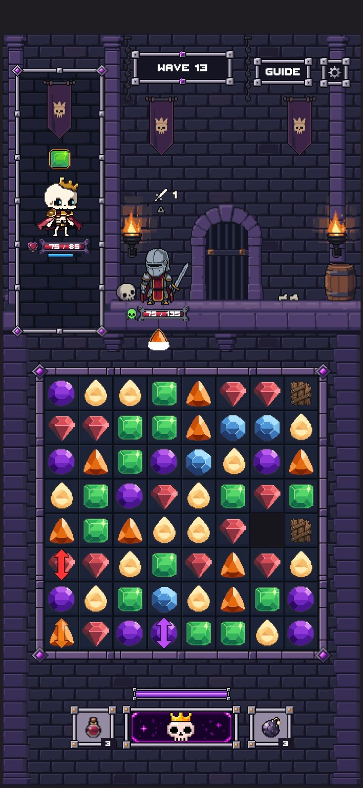
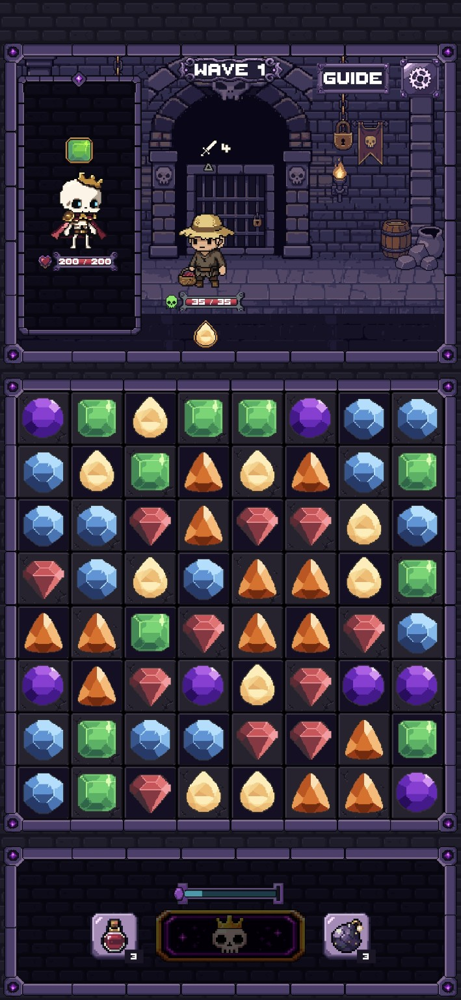

Dungeon Matcher / Hybrid rebuild / Stage 01
Retain the clean structural foundation
33 assets retained0 artwork changes0 new generations
The approved PR #203 wall, flat floor, fascia, support and portrait-recess modules already meet Image 2's structural direction. They remain byte-for-byte unchanged. Image 1's gate and decorative architecture are reserved for later approved stages.
Actual Unity Game View
A separate 360 × 240 art-only study using individual production sprites. The cast view adds unchanged Rattlebones, Farmer and Pan stills as scale/readability probes; it is not a gameplay screenshot. No final gate, lighting, props or HUD redesign is implied.
Actual 1080 × 720 Unity capture · Structure-only capture · Verification evidence
What was kept
| Family | Assets | Decision |
|---|
| Walls and closures | 14 | Quiet large bricks; retain native repeat and closure pieces. |
| Floor top | 5 | Flat 12-pixel course, three middle variants, continuous standing plane. |
| Front fascia | 5 | Broad stone planes; matching end and repeat profiles. |
| Supports | 7 | Retain capital/core/foot, edge and corbel library. Previously rejected right corbel stays absent. |
| Portrait recess | 2 | Retain dark repeat and fixed inset; use overfilled repeat inside an interior mask. |
Native assets
Fresh LibreSprite exports, compared pixel-for-pixel against the production files. Default view is 1×. Zoom changes only the review display.
Wall
Wall_A_Quiet
48 × 48 · 4 colors · unchanged
Original editable source listed in AssetLedger.csvWall_B_VioletStone
48 × 48 · 6 colors · unchanged
Original editable source listed in AssetLedger.csvWall_C_SoftWear
48 × 48 · 4 colors · unchanged
Original editable source listed in AssetLedger.csvWall_Corner_BL
24 × 24 · 4 colors · unchanged
Original editable source listed in AssetLedger.csvWall_Corner_BR
24 × 24 · 4 colors · unchanged
Original editable source listed in AssetLedger.csvWall_Corner_RightBottom16
24 × 16 · 4 colors · unchanged
Original editable source listed in AssetLedger.csvWall_Corner_TL
24 × 24 · 4 colors · unchanged
Original editable source listed in AssetLedger.csvWall_Corner_TR
24 × 24 · 4 colors · unchanged
Original editable source listed in AssetLedger.csvWall_D_DeepStone
48 × 48 · 4 colors · unchanged
Original editable source listed in AssetLedger.csvWall_Edge_Bottom
48 × 24 · 4 colors · unchanged
Original editable source listed in AssetLedger.csvWall_Edge_Bottom16
48 × 16 · 4 colors · unchanged
Original editable source listed in AssetLedger.csvWall_Edge_Left
24 × 48 · 4 colors · unchanged
Original editable source listed in AssetLedger.csvWall_Edge_Right
24 × 48 · 4 colors · unchanged
Original editable source listed in AssetLedger.csvWall_Edge_Top
48 × 24 · 4 colors · unchanged
Original editable source listed in AssetLedger.csvFloorTop
Floor_Left
32 × 12 · 5 colors · unchanged
Original editable source listed in AssetLedger.csvFloor_Mid_A
32 × 12 · 5 colors · unchanged
Original editable source listed in AssetLedger.csvFloor_Mid_B
32 × 12 · 5 colors · unchanged
Original editable source listed in AssetLedger.csvFloor_Mid_C
32 × 12 · 5 colors · unchanged
Original editable source listed in AssetLedger.csvFloor_Right
30 × 12 · 5 colors · unchanged
Original editable source listed in AssetLedger.csvFascia
Fascia_Anchor
64 × 24 · 5 colors · unchanged
Original editable source listed in AssetLedger.csvFascia_Left
42 × 24 · 5 colors · unchanged
Original editable source listed in AssetLedger.csvFascia_Mid_A
64 × 24 · 5 colors · unchanged
Original editable source listed in AssetLedger.csvFascia_Mid_B
64 × 24 · 5 colors · unchanged
Original editable source listed in AssetLedger.csvFascia_Right
62 × 24 · 5 colors · unchanged
Original editable source listed in AssetLedger.csvSupport
Support_Capital
28 × 16 · 4 colors · unchanged
Original editable source listed in AssetLedger.csvSupport_Corbel
28 × 20 · 5 colors · unchanged
Original editable source listed in AssetLedger.csvSupport_Core
28 × 28 · 4 colors · unchanged
Original editable source listed in AssetLedger.csvSupport_Corner_Left
28 × 28 · 5 colors · unchanged
Original editable source listed in AssetLedger.csvSupport_Corner_Right
28 × 28 · 5 colors · unchanged
Original editable source listed in AssetLedger.csvSupport_Edge_Foot
28 × 8 · 4 colors · unchanged
Original editable source listed in AssetLedger.csvSupport_Foot
28 × 24 · 4 colors · unchanged
Original editable source listed in AssetLedger.csvPortraitRecess
Recess_Center
56 × 26 · 5 colors · unchanged
Original editable source listed in AssetLedger.csvRecess_Inset
80 × 167 · 5 colors · unchanged
Original editable source listed in AssetLedger.csvActual style authorities
Current canonical Rattlebones, Farmer, Pan, six 64 × 64 gems, and existing modular UI pieces. All are unchanged.
Verification
33 LibreSprite round trips, binary alpha, 64 exact structural seam comparisons, support join masks, continuous wall coverage and floor contact. Six actual Unity captures at 360 × 240, 720 × 480 and 1080 × 720 have zero source-pixel differences. The portrait mask is exact. Unity test: 1 passed, 0 failed. Existing production Game scene, build settings, 102-asset library and canonical references are preserved.
Supplied direction images
Image 2 supplies the structural foundation; Image 1 supplies later architectural inspiration.

